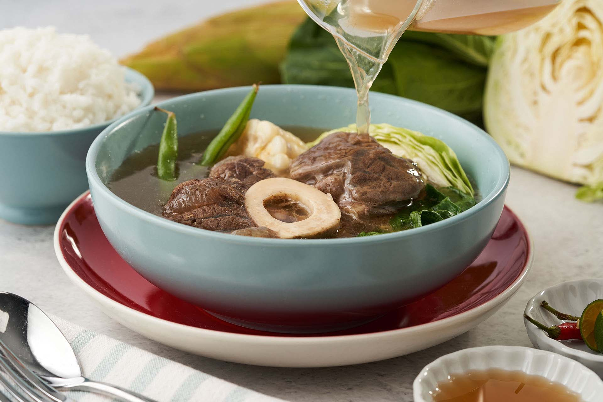

Nilagang Bulalo

Description
Nilagang Baka ala Bulalo is a type of Filipino beef soup wherein chunks of beef are boiled with whole peppercorn and onion until very tender. Vegetables such as cabbage, bok choy, long green beans (also known as pechay Baguio), potato and corn can be used.
Ingredients
- 1 1/2 lb. beef chuck cubed
- 1 tablespoon whole peppercorn
- 2 medium yellow onions wedged
- 8 cups water
- 1 sweet corn divided into 4 pieces
- 4 to 4 tablespoons fish sauce
- 1 beef cube
- 1 large baking potato cubed
- 1/2 head small cabbage sliced
Steps
- Pour water into a cooking pot. Let boil.
- Add whole peppercorn and onion. Boil for 5 minutes.
- Add beef chuck. Let the water re-boil and then cover the cooking pot. Continue to boil in medium heat for 2 hours.
- Add corn and then cover the pot. Cook for 1 hour.
- Add beef cube and potato. Cook for 5 to 6 minutes.
- Pour fish sauce into the pot. Stir.
- Add cabbage. Cover the pot. Cook for 5 minutes.
- Transfer to a serving bowl.
- Serve hot. Share and enjoy!